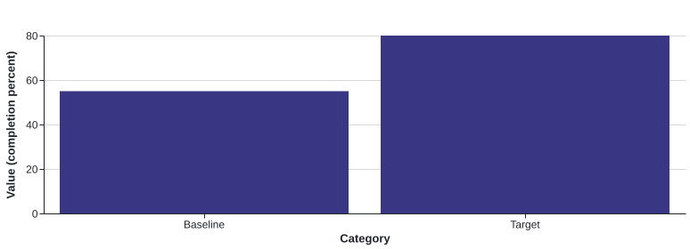

The team needs evidence before committing to a full
rollout. The pilot tests completion, time to first value
and support handoffs. It does not promise a revenue result.
Today
Pilot change
Decision gate
3 separate setup emails
1 sequenced checklist
Review after four weeks
Ownership is unclear
Named success owner
No scope expansion without
review
ALDER STUDIO02 / 03
Compare the options
Sample baseline and pilot target

Read the chart data
Baseline
55 completion percent
Target
80 completion percent
Option
Benefit
Trade-off
Keep the current process
No near-term delivery cost
Existing handoffs remain
Pilot with 20 customers
Tests the approach before a broad change
Requires four weeks and a dedicated owner
Rebuild immediately
Moves directly to a single experience
Commits more resources before learning
Recommended option
Run the limited pilot. Use the current system, rewrite
the welcome sequence and add one checklist; defer any platform migration.
Measure
Pilot target
Source
Setup completed within 7 days
At least 16 of 20 participants
Checklist event log
Support contacts in first week
Record per participant; compare with baseline
Support ticket report
Serious account issues
Zero unresolved at closeout
Incident log
Presenter note: targets are proposed thresholds for this sample, not reported results.
ALDER STUDIO03 / 03
Make the next month measurable
Week
Work
Accountable owner
1
Finalize copy and baseline measures
Maya • Customer success
2
Invite participants and start the pilot
Sam • Operations
3
Review exceptions and fix copy gaps
Alex • Product
4
Report findings and recommend next step
Maya • Customer success
Guardrails
Pause new invitations if account access is affected.
Keep the existing onboarding path available during the test.
Do not expand the pilot without reviewing the final
evidence.